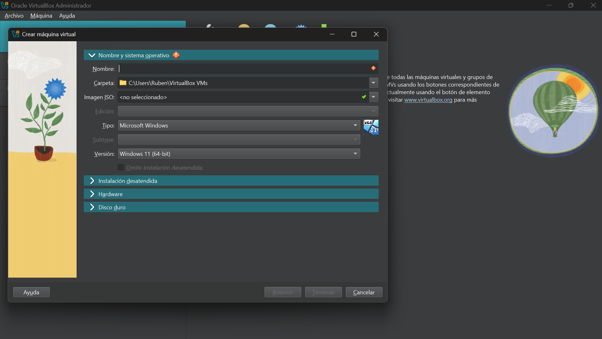
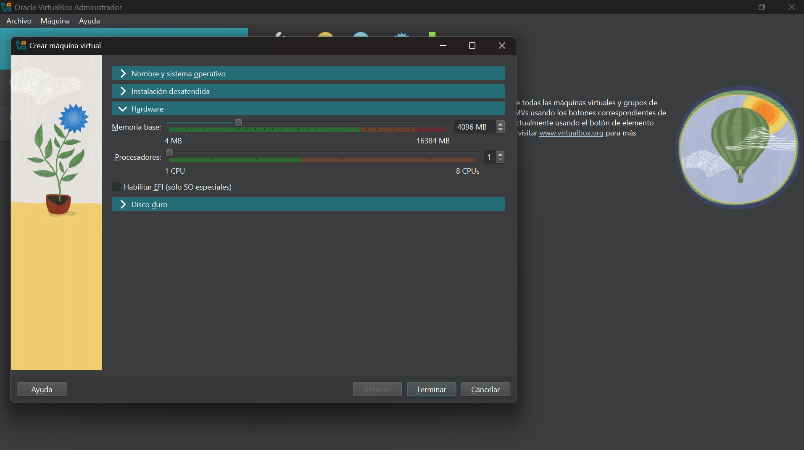
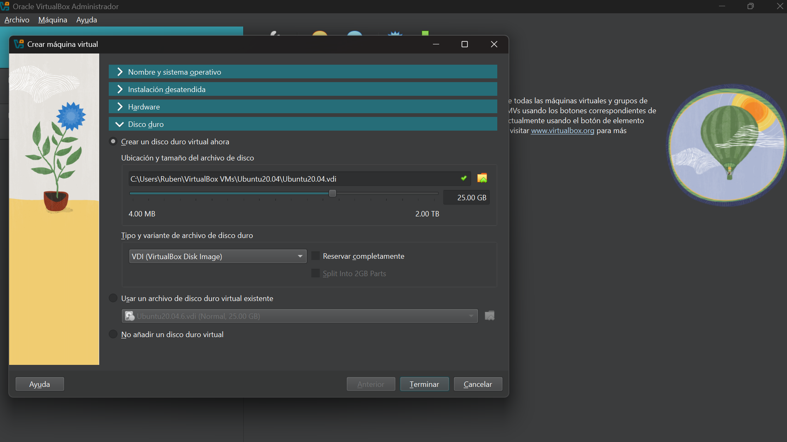
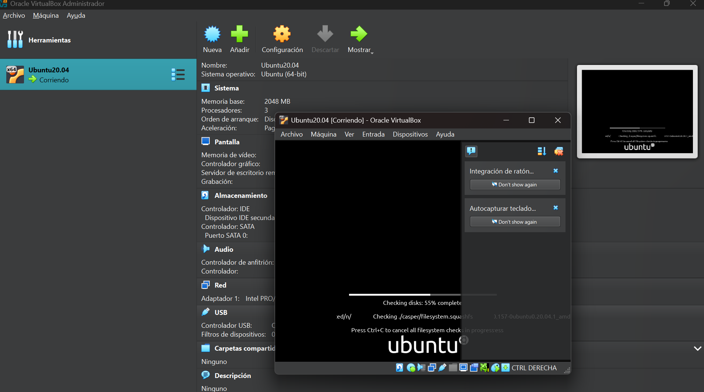
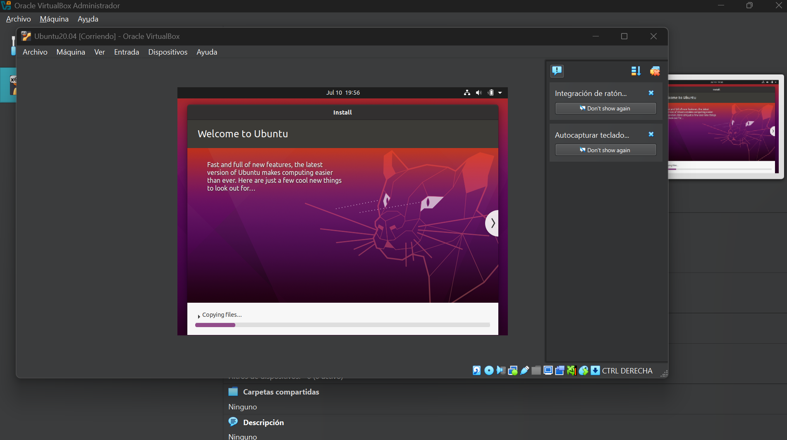

CURSO: Linux Profesional Avanzado - Máquinas Virtuales con Ubuntu
Objetivos de la Clase:
- Comprender el concepto de virtualización.
- Instalar VirtualBox y sus extensiones.
- Crear una nueva máquina virtual para Ubuntu20.04.6LTS.
- Configurar la red de la máquina virtual(Memoria, Disco Duro, Nucleos etc.).
- Realizar la instalación básica del sistema operativo Ubuntu20.04.6.
Paso 1: Instalación de VirtualBox
El primer paso fue descargar e instalar Oracle VirtualBox, la herramienta que nos permitirá emular diferentes sistemas operativos. La descarga se realizó en la pagina oficial, una vez descargado se instaló y configuró para comenzar el siguiente paso que es nuestra primera maquina virtual.
Captura: Proceso de selección de ISO y nombre de la máquina virtual en VirtualBox.
Paso 2: Configuración de la Maquina virtual
Una vez dado el nombre de nuestra maquina virtual, y selecionada la ISO (imagen SO ubuntu 20.04.6), pasamos a la asignación de Hardware, como la memoria, procesadores, etc..
Captura: Asignación de recursos de hardware (RAM y procesadores) para la VM.
Paso 3: Disco duro.
En este paso seleccionamos la cantidad de disco duro que vamos asignar a nuestra máquina virtual y finalizamos la configuración.
Captura: Definición del tamaño y tipo de disco duro virtual.
Paso 4: Iniciando nuestra Máquina virtual.
Aquí iniciamos la maquina, donde se creará y nos abrirá nuestra máquina virtual, para proceder con la instalación de nuestro sistema operativo, Ubuntu20.04.6LTS.
Captura: Primer arranque de la máquina virtual e inicio del instalador de Ubuntu.
Paso 5: Instalación y configuración de Ubuntu20.04.6
Una vez iniciada nuestra máquina virtual, empezará el proceso de instalación del sistema operativo, una vez terminado quedará todo listo para su uso.
Captura: Instalación del sistema operativo Ubuntu 20.04.6 LTS en progreso.
Esta primera sesión fue fundamental para entender la base de la virtualización. Aunque la instalación de la maquina virtual fué directa, la configuración de ubuntu presentó algunos desafíos iniciales, Tuve problemas con la Terminal de linea de comandos y también con el auto-scale de la pantalla, estos desafíios me permitieron profundizar en la gestion de paquetes y configuración del CD Guest additions. Es fascinante ver cómo se puede replicar un entorno de servidor en mi propia máquina.